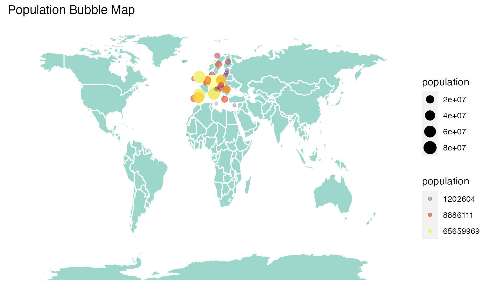

Main Usage
The main purpose if this app is a container of a Shiny app package to explore COVID-19 related variables in several countries in Europe. To use this feature, you can use the launch_app function.
# launch the app
# make sure to have all of the packages in suggest installed
launch_app()
The launched app would appear as follow:

This app comprises of seven tabs as follow:
-
Home. This tab is a landing page of the app. It gives a very brief overview of the app and the urge to explore the app by clicking each tab in the navbar.
-
Cases and Deaths. You can visualize the cases and deaths of COVID-19 in 51 countries in Europe in daily and cumulative-wise. You can also compare several countries with a certain range of date.
-
Testing. You can explore the COVID-19 weekly testing and positivity rates in 30 countries in Europe (EU/EEA member countries and UK). You can also compare certain countries within certain week range. If you wish to use the data only without launch the app, this package contains that data for your own purpose.
library(tibble)
tibble(c19euxplorer::testing_weekly_eu)
#> # A tibble: 954 x 9
#> country country_code year_week new_cases tests_done population testing_rate
#> <chr> <chr> <chr> <dbl> <dbl> <dbl> <dbl>
#> 1 Austria AT 2020-W15 2041 12339 8858775 139.
#> 2 Austria AT 2020-W16 855 58488 8858775 660.
#> 3 Austria AT 2020-W17 472 33443 8858775 378.
#> 4 Austria AT 2020-W18 336 26598 8858775 300.
#> 5 Austria AT 2020-W19 307 42153 8858775 476.
#> 6 Austria AT 2020-W20 363 46001 8858775 519.
#> 7 Austria AT 2020-W21 267 39348 8858775 444.
#> 8 Austria AT 2020-W22 231 46677 8858775 527.
#> 9 Austria AT 2020-W23 184 41063 8858775 464.
#> 10 Austria AT 2020-W24 192 35243 8858775 398.
#> # … with 944 more rows, and 2 more variables: positivity_rate <dbl>,
#> # testing_data_source <chr>
-
Tracing. The content of this tab is the visualization of weekly dominant source of COVID-19 transmission that aggregated from subnational level of 32 countries in Europe. In this tab, you can only visualize one certain country interactively. I also provided a bubble map to choose a country based on its rate of cases per 10,000 people. If you wish to explore the raw data, apart from the app, you can use this code below, since this package contains that data.
tibble(c19euxplorer::transmission_subnational_level)
#> # A tibble: 11,583 x 4
#> Country Region `Level of transmission` Week
#> <chr> <chr> <chr> <chr>
#> 1 Austria Burgenland Not reported 2020-W01
#> 2 Austria Burgenland Not reported 2020-W02
#> 3 Austria Burgenland Not reported 2020-W03
#> 4 Austria Burgenland Not reported 2020-W04
#> 5 Austria Burgenland Not reported 2020-W05
#> 6 Austria Burgenland Not reported 2020-W06
#> 7 Austria Burgenland Not reported 2020-W07
#> 8 Austria Burgenland Not reported 2020-W08
#> 9 Austria Burgenland No cases 2020-W09
#> 10 Austria Burgenland Sporadic 2020-W10
#> # … with 11,573 more rows
-
Community Mobility. The objective of this tab is to explore the mobility of people during the pandemic in six types of locations daily. You are able to choose a country to be displayed. You can also choose the time range. I also added an interactive table of country response measure, which shows the start date and the end date of a measure. Since community mobility is developed to observe the effect of measure to the community activity, this table is useful as a benchmark of choosing the date to track that effect.
-
Data. This tab displays the raw data that are used to visualize the variables in the previous tabs. The users are allowed to choose one or more countries, even select all of the countries available. They are also allowed to choose the time range.
-
More. This tab contains two sub-tabs: About and References. The About sub-tab specifies the purpose of the app and other relevant information, such as the data source used in the app and the R packages to make the app. There is also a brief information of my self. The References sub-tab conveys the reference of data sources, readings, packages, and images used in the app.
Additional Usage
Country Centroids Data
Besides those two data sets, I also embedded a country centroids data set. Apart from COVID-19 matter, this data set is useful if you wish to make a bubble map with a point represents a whole country, such as the following map:
tibble(c19euxplorer::country_centroids)
#> # A tibble: 241 x 3
#> name_long Longitude Latitude
#> <chr> <dbl> <dbl>
#> 1 Aruba -70.0 12.5
#> 2 Afghanistan 66.0 33.8
#> 3 Angola 17.5 -12.3
#> 4 Anguilla -63.1 18.2
#> 5 Albania 20.0 41.1
#> 6 Aland Islands 20.0 60.2
#> 7 Andorra 1.56 42.5
#> 8 United Arab Emirates 54.3 23.9
#> 9 Argentina -65.2 -35.4
#> 10 Armenia 44.9 40.3
#> # … with 231 more rows
#the map
ggplot() +
geom_polygon(data = world_map,
aes(x = long,
y = lat,
group = group),
fill = "#73C6B6",
colour = "white",
alpha = 0.7
) +
geom_point(data = pop_map,
aes(x = Longitude,
y = Latitude,
colour = population,
size = population,
alpha = population)) +
scale_size_continuous(range = c(1, 6)) +
scale_color_viridis(option = "inferno", trans = "log") +
scale_alpha_continuous(trans = "log") +
guides(colour = guide_legend()) +
xlab("") +
ylab("") +
theme(panel.grid = element_blank(),
axis.title = element_blank(),
axis.text = element_blank(),
axis.ticks = element_blank(),
plot.background = element_rect(fill = "white"),
panel.background = element_rect(fill = "white")) +
labs(title = "Population Bubble Map")
#> Warning: Removed 1 rows containing missing values (geom_point).
daily_indicator()
This function aims to simplify the code in c19euxplorer shiny app by selecting country, date, and indicators in cumulative data to be visualized in Cases and Deaths tab. This function would be used in the app, although you can also use this function outside the app. However, make sure to have these variables (with the exact same name) in your data frame in order to make the function works.
- daily_cases
- daily_deaths
- daily_cases_rate
- daily_deaths_rate
- country
- date
plot_daily <- plot %>%
rename(daily_cases = new_cases,
date = year_week)
plot_daily_new <- daily_indicator(plot_daily, "Cases")
tibble(plot_daily_new)
#> # A tibble: 954 x 3
#> country date count
#> <chr> <chr> <dbl>
#> 1 Austria 2020-W15 2041
#> 2 Austria 2020-W16 855
#> 3 Austria 2020-W17 472
#> 4 Austria 2020-W18 336
#> 5 Austria 2020-W19 307
#> 6 Austria 2020-W20 363
#> 7 Austria 2020-W21 267
#> 8 Austria 2020-W22 231
#> 9 Austria 2020-W23 184
#> 10 Austria 2020-W24 192
#> # … with 944 more rows
getplot()
Here, I would give you an example of the usage of getplot() function. We could use plot_cumulative to make a plot. However, since there are a lot of countries, we would like to choose only several countries.
library(lubridate)
#>
#> Attaching package: 'lubridate'
#> The following objects are masked from 'package:base':
#>
#> date, intersect, setdiff, union
for_plot <- plot_daily_new %>%
mutate(week_only = as.numeric(sub(".*W", "", date))) %>%
filter(country %in% c("Austria", "Spain", "United Kingdom")) %>%
mutate(date = as.Date(paste(2020, week_only, 1, sep="-"), "%Y-%U-%u"))
getplot(for_plot)
getref()
Currently, I have not found a package that facilitate the creation of reference in Shiny. So, I made this function to make the reference writing come in handy.
Using the HTML tag provided by Shiny, you have to type this code to create a reference like this:
tags$li(class = "li-custom", "Winston Chang. (2018).",
tags$a(href = "https://CRAN.R-project.org/package=shinythemes",
"shinythemes: Themes for Shiny",
class = "externallink"))Winston Chang. (2018). shinythemes: Themes for Shiny
With getref(), you just have to type this:
getref("Winston Chang",
"2018",
"https://CRAN.R-project.org/package=shinythemes",
"shinythemes: Themes for Shiny")
getlink()
Just like getref(), getlink() also aims to simplify the typing of link in Shiny app’s UI using the HTML tag. Initially, Shiny has a markdown function to also make this task easier. However, markdown adds the new hyperlink text into a new line. Sometimes, we want to use some hyperlink texts in one sentences.
Using HTML tag, you have to type this code to create this hyperlink text:
Master of Business Analytics
tags$a(href = "https://www.monash.edu/study/courses/find-a-course/2021/business-analytics-b6022?gclid=EAIaIQobChMI5bKC_Y-g7AIVzn8rCh3aQABbEAAYASAAEgK09PD_BwE&international=true#overview-1",
"Master of Business Analytics",
class = "externallink")
With getlink(), you can just type this:
getlink("https://www.monash.edu/study/courses/find-a-course/2021/business-analytics-b6022?gclid=EAIaIQobChMI5bKC_Y-g7AIVzn8rCh3aQABbEAAYASAAEgK09PD_BwE&international=true#overview-1",
"Master of Business Analytics")